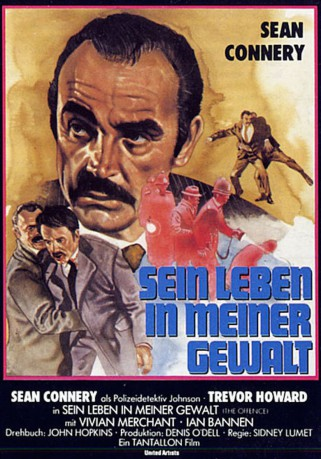

#10476 Sein Leben in meiner Gewalt
Alternativ: The Offence (Englischer Titel)
 
 IMDB-Wertung: 7.0 / 10
IMDB-Wertung: 7.0 / 10  Metascore: 0
Metascore: 0 
Während eines Verhörs verletzt ein Sergeant der britischen Polizei einen der Kindesmisshandlung Verdächtigen derart schwer, dass der Mann an seinen Verletzungen stirbt. In nicht chronologischer Folge erzählt der Film, wie es zu der Tat kam.
Jahr: 1973
Dauer: 107 Minuten
FSK: 16
Land: England Studio: MGM Home EntertainmentTonspuren:
Untertitel:
Auflösung: 1080p (1920x1080) Größe: 5509 MB
Genre: Thriller, Drama, Krimi
Regisseur:  Sidney Lumet
Sidney Lumet
Drehbuch: John Hopkins, John Hopkins
Soundtrack: Harrison Birtwistle
Darsteller:
 Sean Connery als Detective Sergeant Johnson
Sean Connery als Detective Sergeant Johnson Trevor Howard als Lieutenant Cartwright, Detective Superintendant
Trevor Howard als Lieutenant Cartwright, Detective Superintendant- Vivien Merchant als Maureen Johnson
 Ian Bannen als Kenneth Baxter
Ian Bannen als Kenneth Baxter Peter Bowles als Detective Inspector Cameron
Peter Bowles als Detective Inspector Cameron- John Hallam als Panton
- Rhoda Lewis als Woman at School
 Fred Wood als Man Accosted at night (uncredited)
Fred Wood als Man Accosted at night (uncredited)- Derek Newark als Frank Jessard
- Ronald Radd als Lawson
- Richard Moore als Garrett
- Anthony Sagar als Hill
- Maxine Gordon als Janie Edmonds, the Raped Girl
- Hilda Fenemore als Woman on Common
- Cynthia Lund als Child at School
- Howard Goorney als Lambert
- Brian Grellis als Policeman Posing as Workman by the School (uncredited)
- Roger Hume als (uncredited)
- Gordon Keating als Barman (uncredited)
- Roy Macready als Barman (uncredited)
- Michael Redfern als Policeman posing as workman by the school (uncredited)
Datei: X:\1973\Sein Leben in meiner Gewalt (1973, FSK16, 1920x1080).mkv seit 11.01.2019
Festplatte: HD 1971-1979
 Es gibt insgesamt 30 Filme in der Gruppe '1973'
Es gibt insgesamt 30 Filme in der Gruppe '1973'